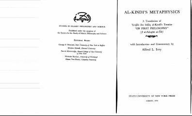

AMAl-Kindiyning 'Birinchi falsafa' asariga ilmiy tarjima va sharhlar to'plami.
Ushbu kitob faylasuf al-Kindiyning 'Birinchi falsafa haqida' nomli asarining ingliz tiliga tarjimasi va unga yozilgan ilmiy sharhlarni o'z ichiga oladi. Alfred L. Ivry tomonidan tayyorlangan ushbu tadqiqot islom falsafasi va uning antik davr merosi bilan bog'liqligini chuqur tahlil qiladi.